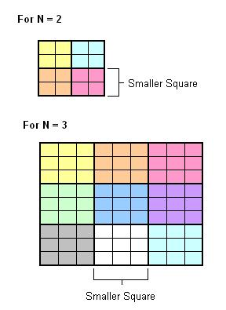
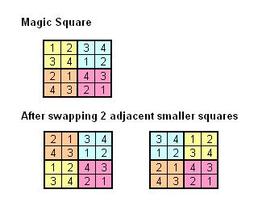

Chandan has drawn a square of size N2 x
N2 on
a piece of cross-section paper and divided it into N2 smaller
squares of size N x N. Ram wants to write numbers from 1 to N2 in
the squares of the paper, (let's call them cells) in order to obtain
a magic square. A magic square is a square in which:
1. There is one in the left upper cell.
2. There are no repeating numbers in any column.
3. There are no repeating numbers in any row.
4. There are no repeating numbers in any of the smaller
squares.
5. If we swap two smaller squares having a common side,
then we obtain square satisfying properties 2 to 4.
Ram has already written several numbers. Determine if it
is possible to fill the remaining cells and obtain a magic
square.
Example:
 
Input Format
Your function will take a multi-dimensional integer array depicting
the square matrix (N2 x
N2).
Constraints
1<= N <=20
Output Format
You need to return output as 1, if the magic square is
possible with the given input, 0 otherwise.
Sample Test case 1
Sample Input
Sample Input
4
4
0 0 0 0
0 0 0 0
0 0 0 0
0 0 0 0
Sample Output
1
Sample Test case 2
Sample Input
4
4
1 0 0 0
0 0 2 0
0 3 0 0
0 0 0 4
Sample Output
0
Sample
Test case 3
Sample Input
9
9
1 2 3 0 0 0 0 0 0
0 0 0 0 0 0 1 2 3
0 0 0 1 2 3 0 0 0
2 3 1 0 0 0 0 0 0
0 0 0 0 0 0 2 3 1
0 0 0 2 3 1 0 0 0
3 1 2 0 0 0 0 0 0
0 0 0 0 0 0 3 1 2
0 0 0 3 1 2 0 0 0
Sample Output
1